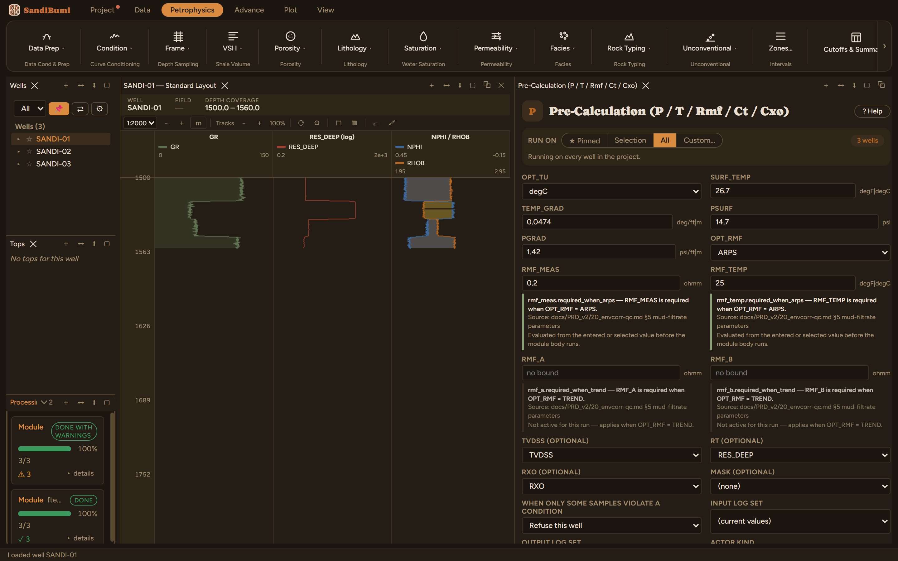

Pre-Calculation (P / T / Rmf / Ct / Cxo)
Reservoir-condition inputs for saturation and SandiMin work, from linear trend fits in true vertical depth: formation temperature and pressure, mud-filtrate resistivity at formation temperature, and the QC conductivities CT and CXO.
FTEMP = SURF_TEMP + TEMP_GRAD·TVDSS; FPRESS = PSURF + PGRAD·TVDSS ARPS: RMF@FTEMP = RMF·(T_meas + 6.77)/(FTEMP + 6.77) [temperatures in °F] TREND: RMF@FTEMP = RMF_A + RMF_B·log10(TVDSS) CT = 1000/RT; CXO = 1000/RXO [mmho/m]
What this is and when to reach for it
Pre-Calculation is the environment builder: one run that writes formation temperature, formation pressure, mud-filtrate resistivity at formation temperature, and the two conductivity conveniences CT and CXO. Run it once per study, right after Formation Temperature or instead of it, and everything downstream that needs the borehole environment (gas correction, environmental corrections, saturation work) reads these curves rather than asking you to retype the numbers.
The physics
Four small models in one pass:
- Temperature: the same linear trend as the Formation Temperature chapter, surface temperature plus gradient times depth.
- Pressure: hydrostatic, surface pressure plus a pressure gradient times depth. The default gradient is fresh-water hydrostatic; overpressured intervals need a per-zone override.
- Rmf at temperature: you measure mud-filtrate resistivity in the lab at surface temperature; the formation is hotter, and a hotter electrolyte conducts better. The Arps relation R2 = R1 · (T1 + 21.5) / (T2 + 21.5) (degC form) rescales the measurement to each sample's FTEMP.
- CT and CXO: deep and flushed conductivity, 1000/RT and 1000/RXO, for crossplots and QC that prefer conductivity space.
The picks and why
- OPT_TU declares the unit your temperature entries are in. This walkthrough enters degC; the surface temperature and gradient are then 26.7 degC and 0.0474 degC/m, the metric restatement of the shipped trend, matching the Formation Temperature chapter.
- PSURF 14.7 psi and PGRAD 1.42 psi/m: atmospheric surface pressure and fresh-water hydrostatic restated per metre. At TD (1570 m) that predicts 14.7 + 1.42 × 1570 = 2244 psi, and the run reproduces exactly that.
- RMF_MEAS 0.2 ohmm at RMF_TEMP 25 degC: the header-style measurement this walkthrough converts.
- OPT_RMF selects the conversion (ARPS shipped).
What changes when you change them: the temperature picks act exactly as in the Formation Temperature chapter, and they reach further here, because Rmf inherits them. Run live on these wells: with the shipped 0.0474 degC/m the median RMF is 0.0770 ohmm; with the superseded 0.03 degC/m gradient it becomes 0.0988 ohmm, 28 percent higher, because a cooler formation leaves the filtrate less conductive. A gradient disagreement you might shrug at in degC lands directly in every resistivity-based answer.
Step by step
- Open Petrophysics ▸ Data Prep ▸ Pre-Calculation.
- Set OPT_TU to your entry unit, then the temperature trend, the pressure pair, and the Rmf measurement with the temperature it was read at.
- Fill the custody line and press Run Pre-Calculation.

Reading the result
The run reports 3 degraded, and that word is the lesson. Open the per-well report: FTEMP, FPRESS, RMF and CT all answered in full (1185 finite samples each), but CXO is empty, because this delivery carries no shallow resistivity RXO. Degraded means "part of what this module offers had no evidence", not "something went wrong". The honest census, from the Database Inspector:
SELECT curve_name, COUNT(*) FILTER (WHERE NOT isnan(value)) AS finite
FROM computed_curves
WHERE curve_name IN ('FTEMP','FPRESS','RMF','CT','CXO')
GROUP BY curve_name
gives FTEMP, FPRESS, RMF, CT at 1185 and CXO at 0. The headline numbers: median RMF 0.0770 ohmm (the 0.2 ohmm lab measurement, roughly 2.6 times more conductive at ~99 degC), FPRESS reaching 2244.2 psi at TD, median CT 318.9 (1000/RT).

QC and pitfalls
- Enter temperatures in the unit OPT_TU says. A Fahrenheit surface temperature typed into a degC pane is a 60-degree error that still draws a plausible line.
- The pressure gradient is deliberately overridable per zone: a pressure step at a top is a real compartment. The temperature trend is well-scoped and a per-zone override of it is refused.
- If Formation Temperature was also run, the later run's FTEMP stands. Keep one owner for the temperature trend in a study, and cite it once.
What the application enforces
Everything below is generated from the same manifest the application builds this module’s pane from — descriptions, defaults, sources, ranges and pre-run checks here are exactly what the running application enforces.
Reservoir-condition inputs for saturation and SandiMin work, from trend fits: formation temperature = SURF_TEMP + TEMP_GRAD*TVDSS and FPRESS = PSURF + PGRAD*TVDSS, both linear in true vertical depth. Gradients — and the TREND fit below — are per depth unit of the TVDSS curve: enter per-metre values (and a metric refit) for metric wells. The shipped 77 degF / 0.026 deg/ft starting values are one study's feet-based fits, attributed to the owner by DEC-077 — refit per basin, and convert before a metric well (SB-ENV-045 records the 66 degC cost of skipping that). SURF_TEMP / TEMP_GRAD / RMF_TEMP are entered in OPT_TU units, but the FTEMP curve is always written in degC (the unit every downstream module assumes); FTEMP_F is the same trend in degF for SandiMin fluid-property entry. RMF at formation temperature comes either from a surface mud-filtrate measurement Arps-converted per sample (ARPS) or from a field regression RMF = RMF_A + RMF_B*log10(TVDSS) already fit at formation temperature (TREND, for wells with no mud data). CT = 1000/RT and CXO = 1000/RXO are QC/plotting conductivities in mmho/m — SandiMin's CT/CXO tool rows read the RESISTIVITY curves directly and convert internally, so do not feed these curves to them. No TVDSS curve → measured DEPTH is used instead (fine for near-vertical wells).
Input curves
| Role | Description | Resolves to | Required | Notes |
|---|---|---|---|---|
| TVDSS | True vertical depth subsea | TVDSS | no | — |
| RT | Deep resistivity | RES_DEEP | no | — |
| RXO | Flushed-zone resistivity | RXO | no | — |
Parameters
Whole-well defaults; per-zone values from the Zones pane take precedence inside their zones (except where a parameter is marked one-value-per-well).
SURF_TEMP (degF|degC)
Surface temperature (intercept, whole well)
- Default: 77
- Accepted range: -50 to 150 degF|degC
- One value per well — a named-zone override of this parameter is refused.
TEMP_GRAD (deg/ft|m)
Temperature gradient per TVDSS unit (whole well)
- Default: 0.026
- Accepted range: 0.0005 to 0.2 deg/ft|m
- One value per well — a named-zone override of this parameter is refused.
PSURF (psi)
Formation pressure intercept
- No shipped default. You supply this value, and a run entering it explicitly must also cite the source that covers it.
- Accepted range: -500 to 5000 psi
PGRAD (psi/ft|m)
Pressure gradient per TVDSS unit
- No shipped default. You supply this value, and a run entering it explicitly must also cite the source that covers it.
- Accepted range: 0.05 to 5 psi/ft|m
RMF_MEAS (ohmm)
Rmf measured at surface (ARPS)
- No shipped default. You supply this value, and a run entering it explicitly must also cite the source that covers it.
- Accepted range: 0.001 to 20 ohmm
- Checked before the run:
rmf_meas.required_when_arps— RMF_MEAS is required when OPT_RMF = ARPS. Applies when: [object Object].Source: docs/PRD_v2/20_envcorr-qc.md §5 mud-filtrate parameters
RMF_TEMP (degF|degC)
Rmf measurement temperature (ARPS)
- No shipped default. You supply this value, and a run entering it explicitly must also cite the source that covers it.
- Accepted range: -50 to 150 degF|degC
- Checked before the run:
rmf_temp.required_when_arps— RMF_TEMP is required when OPT_RMF = ARPS. Applies when: [object Object].Source: docs/PRD_v2/20_envcorr-qc.md §5 mud-filtrate parameters
RMF_A (ohmm)
RMF trend intercept (TREND, ft-based fit)
- No shipped default. You supply this value, and a run entering it explicitly must also cite the source that covers it.
- Accepted range: 0 to 5 ohmm
- Checked before the run:
rmf_a.required_when_trend— RMF_A is required when OPT_RMF = TREND. Applies when: [object Object].Source: docs/PRD_v2/20_envcorr-qc.md §5 mud-filtrate parameters
RMF_B (ohmm)
RMF trend slope on log10(TVDSS) (TREND — fit must use the TVDSS curve's depth unit)
- No shipped default. You supply this value, and a run entering it explicitly must also cite the source that covers it.
- Accepted range: -2 to 2 ohmm
- Checked before the run:
rmf_b.required_when_trend— RMF_B is required when OPT_RMF = TREND. Applies when: [object Object].Source: docs/PRD_v2/20_envcorr-qc.md §5 mud-filtrate parameters
Options
OPT_TU
Temperature unit for entered params
- Choices:
degFdegC
- Default:
degF
OPT_RMF
RMF source
- Choices:
ARPSTREND
- Default:
ARPS
Output curves
| Name | Description |
|---|---|
| FTEMP | Formation temperature (always degC) |
| FTEMP_F | Formation temperature in degF (SandiMin fluid entry) |
| FPRESS | Formation pressure |
| RMF | Mud filtrate resistivity at FTEMP |
| CT | Deep conductivity 1000/RT (QC/plotting) |
| CXO | Flushed conductivity 1000/RXO (QC/plotting) |